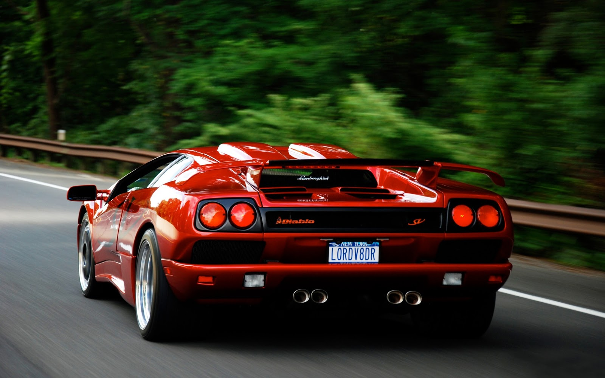

| Company | Contact | Country |
|---|---|---|
| Alfreds Futterkiste | Maria Anders | Germany |
| Centro comercial Moctezuma | Francisco Chang | Mexico |
| Ernst Handel | Roland Mendel | Austria |
| Island Trading | Helen Bennett | UK |
| Laughing Bacchus Winecellars | Yoshi Tannamuri | Canada |
| Magazzini Alimentari Riuniti | Giovanni Rovelli | Italy |